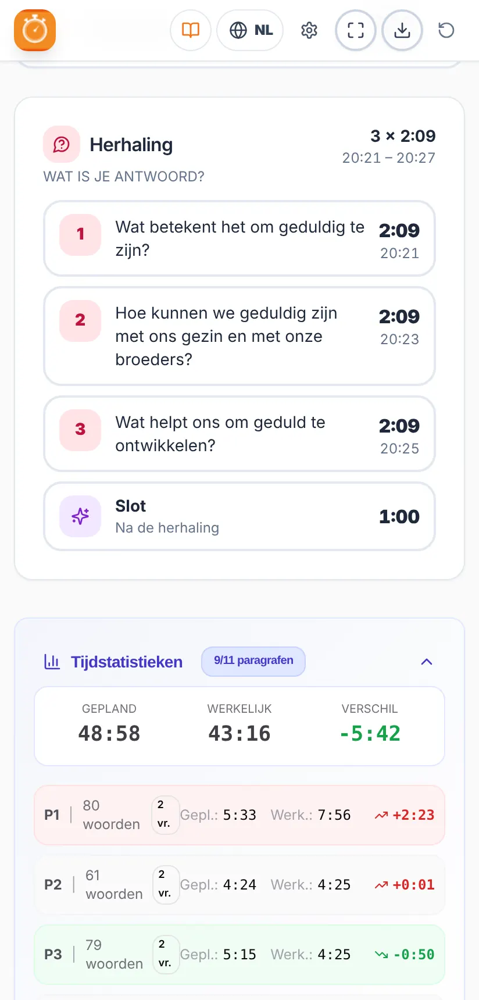

Handleiding
Studietimer
De Wachttorenstudie voorbereiden en op tijd leiden
De Wachttorenstudie voorbereiden en op tijd leiden
Meteen beginnen? Bekijk de snelstartgids in 7 stappen.
De Studietimer helpt de broeder die de Wachttorenstudie leidt de tijd goed te verdelen en op tijd te eindigen.
Je laadt het artikel van de week als pdf en de app:
Onofficiële app. Het is een gratis, onafhankelijk project. Het is geen officiële publicatie en heeft geen band met jw.org of met de organisatie van Jehovah’s Getuigen. Het artikel wordt op je eigen apparaat geanalyseerd: het wordt niet naar een server gestuurd of daar opgeslagen.
De afbeeldingen in deze handleiding gebruiken een verzonnen voorbeeldartikel, geen echt Wachttoren-artikel.
Installeer hem via Google Play: zoek naar ‘Temporizador de Estudio’ of open deze link:
play.google.com/store/apps/details?id=com.comangelo.temporizadorestudio
Hij staat nog niet in de App Store, maar werkt net zo goed via het web en kan op het beginscherm gezet worden:
Open temporizador-estudio.vercel.app in de browser. In Chrome en Edge kun je hem als app installeren via het installatie-icoon in de adresbalk.
Updates: als er een nieuwe versie is, toont de app de melding ‘Er is een nieuwe versie van de app.’ met de knop Bijwerken. Hij werkt zichzelf nooit midden in een studie bij.

Van boven naar beneden vind je:
De kaart ‘Artikel van deze week’ toont de huidige week (bijvoorbeeld 9-15 november 2026) en het nummer van De Wachttoren waarin die staat. Met de pijlen ‹ › kun je een andere week kiezen.
De Wachttoren wordt gedownload in de taal van de app. Staat de app in het Nederlands, dan wordt de Nederlandse uitgave gedownload; staat hij in het Engels, de Engelse, en zo verder voor elke taal. Wil je een andere taal downloaden, verander dan eerst de taal van de app (hoofdstuk 14). In het Portugees wordt de uitgave voor Portugal of voor Brazilië gedownload, afhankelijk van je keuze.
De app bewaart een kopie van het tijdschrift. De volgende weken van hetzelfde nummer open je direct met ‘Artikel van deze week openen’, zonder opnieuw te downloaden. Bewaarde tijdschriften worden 3 maanden na hun laatste week automatisch verwijderd.
Op de computer kun je de pdf ook ergens op het startscherm slepen (je ziet ‘Zet de Wachttoren-pdf hier neer’) of de map kiezen waarin je de tijdschriften bewaart; de app vindt ze dan zelf.
Staat er dat het tijdschrift nog niet gepubliceerd is? jw.org publiceert elk nummer een paar weken van tevoren. Als je een week ver in de toekomst kiest, is het misschien nog niet beschikbaar.


Na het laden van het artikel zie je:
Op de plankaart vertelt de melding ‘Commentaren: X s per vraag’ je hoeveel tijd er gemiddeld is om elke vraag te beantwoorden.
Is het artikel te lang voor de gekozen tijd, dan verschijnt de melding ‘Past niet’ met wat er tekortkomt. Je kunt de duur verlengen of in de Instellingen sneller laten lezen.

Elke paragraaf heeft een regel met het nummer, de geplande tijd en ongeveer het tijdstip waarop die zou moeten eindigen. Gekleurde labels laten zien waar je rekening mee moet houden:
| Label | Wat het betekent |
|---|---|
| Jakobus 5:7, 8 | Er is een tekst die gelezen wordt. De precieze verwijzing wordt getoond. |
| Afbeelding | De vraag verwijst naar een afbeelding in het artikel (‘Zie ook afbeelding’). |
| Voetnoot | Er is een voetnoot om te bespreken. |
| ★ Kernpunt | De vraag noemt een kader of een benadrukte gedachte tussen aanhalingstekens. |
Tik op een paragraaf om hem te openen. Je ziet de woorden, de leestijd, de vraag en, als hij lang is, de extra tijd voor meer commentaren. Van daaruit:
Paragrafen met een gezamenlijke vraag (bijvoorbeeld ‘5, 6.’) worden als groep behandeld, en de knop Volgende slaat de hele groep over.
Aanbevolen: open tijdens de studie de presentatiemodus (hoofdstuk 9). Hier wordt de algemene werking uitgelegd, die in beide weergaven hetzelfde is.
Op de telefoon staan de belangrijkste knoppen altijd onderaan, in de onderbalk:


Bovenaan op de plankaart kun je de studie pauzeren en hervatten. De melding ‘Over m:ss afronden’ herinnert je eraan hoeveel tijd er nog is tot de eindtijd.
Het scherm blijft aan zolang de studie loopt, zodat je de telefoon niet hoeft aan te raken. Daarna schakelt de telefoon het scherm weer gewoon uit.
De kaart van het huidige deel (paragraaf, inleiding, herhalingsvraag of slot) verandert van kleur naargelang de verstreken tijd:
| Kleur | Wanneer | Wat te doen |
|---|---|---|
| OP TIJD | Tot de geplande tijd. | Alles goed: ga zo door. |
| UITLOOP | De tijd is overschreden, maar met niet meer dan 30%. | Rond de commentaren af. |
| OVER TIJD | Meer dan 30% boven de geplande tijd. | Ga naar de volgende paragraaf. |


In de laatste 5 minuten van de studie hebben paragrafen en herhalingsvragen geen uitloop: ze gaan direct van groen naar rood, zodat de tijd voor het einde niet opgaat. Het slot houdt altijd zijn uitloop.
Loopt een deel uit, geen probleem: als je op Volgende tikt, verdeelt de app de resterende tijd opnieuw over wat er nog komt, zodat je op tijd eindigt.
Dit is de aanbevolen manier om de studie te leiden. De presentatiemodus voorkomt afleiding: hij toont alleen wat je nodig hebt, de kleuren groen, geel en rood laten je in één oogopslag zien waar je bent en hoe je ervoor staat met de tijd, en de knoppen Volgende en Commentaar zijn groot en makkelijk te vinden en in te drukken.
Bedoeld om de telefoon of tablet op de lessenaar of het podium te leggen: alles groot en in één oogopslag te zien. Je opent hem met de knop ⛶ in de onderbalk en sluit hem met ✕ (of de toets Esc op de computer). Op de telefoon sluit je hem ook met de knop ‘terug’, zonder de app te verlaten.
Bovenaan staan de huidige tijd, het einde en de resterende tijd, met een voortgangsbalk. In het midden het huidige deel met stopwatch en kleur, en de labels (bijvoorbeeld Lees Jakobus 5:7, 8). Onderaan de knoppen Commentaar en Volgende.
Er zijn drie weergaven. Je wisselt ze met de knop ▦ (rechtsboven) of via Instellingen → Scherm:


In de presentatiemodus gaat de grote knop vanzelf door de studie: Studie starten → Naar paragraaf 1 → Volgende paragraaf → Herhalingsvraag → Naar het slot → Studie afronden. In de laatste 5 minuten verschijnt de melding dat het tijd is om af te ronden.
Voorbeeld (het artikel op de afbeeldingen): bij een studie van 60 minuten met 11 paragrafen en 21 vragen (18 bij de paragrafen en 3 in de herhaling), met de tijd per antwoord op 35 seconden, gaat ongeveer 7 minuten naar voorlezen, 2 minuten naar inleiding en slot en ongeveer 51 minuten naar commentaren: iets meer dan 2 minuten per vraag.
Tik rechtsboven op ⚙. De instellingen worden op je apparaat bewaard en zijn verdeeld over vier tabbladen:


| Tabblad | Wat je kunt wijzigen |
|---|---|
| Tijd | Duur van de studie (tot 60 min). Duur van de inleiding en het slot (30 s tot 3 min). Bezoek van de kringopziener. |
| Lezen | Leessnelheid van de lezer: Langzaam (150), Normaal (180) of Snel (210 woorden/min). Tijd per antwoord (30 tot 90 s; geldt ook voor elke tekst, afbeelding, voetnoot of elk kernpunt). Lange of samengevoegde paragrafen: Geen extra, Normaal of Meer commentaren. |
| Meldingen | Geluid en trillen (met knoppen om ze te testen). Melding paragraaf over tijd, melding ‘Nog 5 minuten’ en maximaal twee meldingen voor de herhaling. |
| Scherm | Taal, licht of donker thema (met vier donkere varianten) en de weergave van de presentatiemodus. |
Als je de leessnelheid of de tijd per antwoord wijzigt terwijl de studie loopt, geldt dat voor de volgende studie.
Zorg dat de telefoon niet op stil staat als je de meldingen wilt horen. Trillen werkt op Android; op de iPhone hangt het van de browser af.

Zet in de week van het bezoek de schakelaar ‘Bezoek van de kringopziener’ aan op het startscherm (of via Instellingen → Tijd). De studie duurt dan 30 minuten en de paragrafen worden niet voorgelezen: de vragen, teksten, afbeeldingen en herhaling blijven. Vergeet niet hem na het bezoek weer uit te zetten.

De app werkt in het Spaans, Engels, Duits, Italiaans, Frans, Portugees, Pools, Nederlands en Roemeens. Verander de taal met de wereldbolknop bovenaan of via Instellingen → Scherm. Als je de taal verandert:
Deze handleiding is in al die talen beschikbaar: gebruik de taalknoppen bovenaan de pagina.

De tijdstatistieken vergelijken de geplande tijd met de werkelijke tijd voor de hele studie en voor elke paragraaf, met het verschil in groen (sneller) of rood (langzamer) en de getelde commentaren. Zo zie je welke delen uitliepen en kun je het de volgende keer aanpassen (bijvoorbeeld de leessnelheid).
Met de knop exporteren ⬇ in de bovenbalk kun je het studieplan opslaan als afbeelding (PNG) of als pdf, om het af te drukken of te delen.
Om een nieuwe studie voor te bereiden, gebruik je de knop opnieuw beginnen ↻.